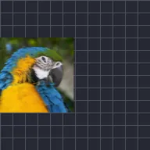

Настоящее размытие в движении

Размывает слой вдоль его реального движения, поворота и масштабирования, как затвор камеры. Чем шире угол затвора, тем длиннее шлейф, а больше сэмплов делают его плавнее. В предпросмотре размытие быстрее, если не включено «Полное размытие».
Настоящее размытие в движении работает как затвор камеры. Угол затвора — как долго затвор остаётся открытым: 180 градусов дают обычный киношный вид, а 360 — самые длинные шлейфы. Сэмплы — сколько копий смешивается: чем больше, тем плавнее, но медленнее.
Оно следует настоящему движению слоя, включая эффекты движения. Предпросмотр показывает быструю аппроксимацию, если в панели предпросмотра не включено Полное размытие.
Настройки
| Настройка | Тип | Диапазон | По умолчанию |
|---|---|---|---|
| Угол затвора | Угол | от 0° до 360° | 180° |
| Сэмплы | Число | от 2 до 32 | 8 |